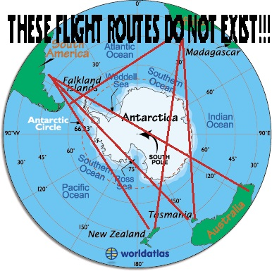
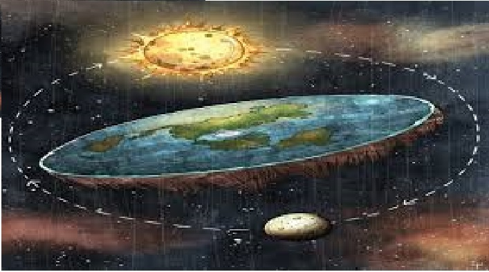

Cinjenice koje potvrdjuju ovu teoriju :
Na pitanje da se dokaze da bog ne postoji nek taj neko prvo da neku vrstu fizickog dokaza da on postoji jer su prvo bog stvori i propovedano da postoji bez fickih dokaza jer je tada ljudima bilo lako manipulisati zbog toga sto su bili na manje nivou intaligencije , a dobro vise puta ponavljana laza prelazi u istinu nek mi on dokaze suprotno
Cinjenice koje potvrdjuju ovu teoriju:
Slika kao moguci dokaz
Vladari sveta koji drze sve zemaljsko a mozda i vanzemaljsko lazu nas o svemu ogranicavaju nas stavljaju u kalupe i hrane se ljudskom nesrecom najverovatnije su to JEVREJI kao sto svi znamo odgovorni su za ekonosku krizu u svetu za Prvi svetski rat zbog cega ih je i hitler hteo istrebiti posto su na nemacku posle rata baceni okovi tako da su ziveli u veoma losoj situaciji a nacisti su se pojavili kao neki vid pobune dok illuminati izokrenu pricu i kazu da je hitler bolesnik mozda i jeste bio ali je znao sta da radi istoriju pisu pobednici a ona je ista kao i knjizevno delo njeno shvatanje zavisi od citaoca do citaoca